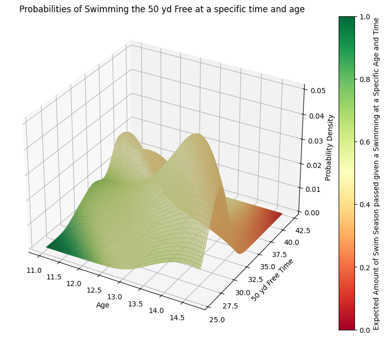
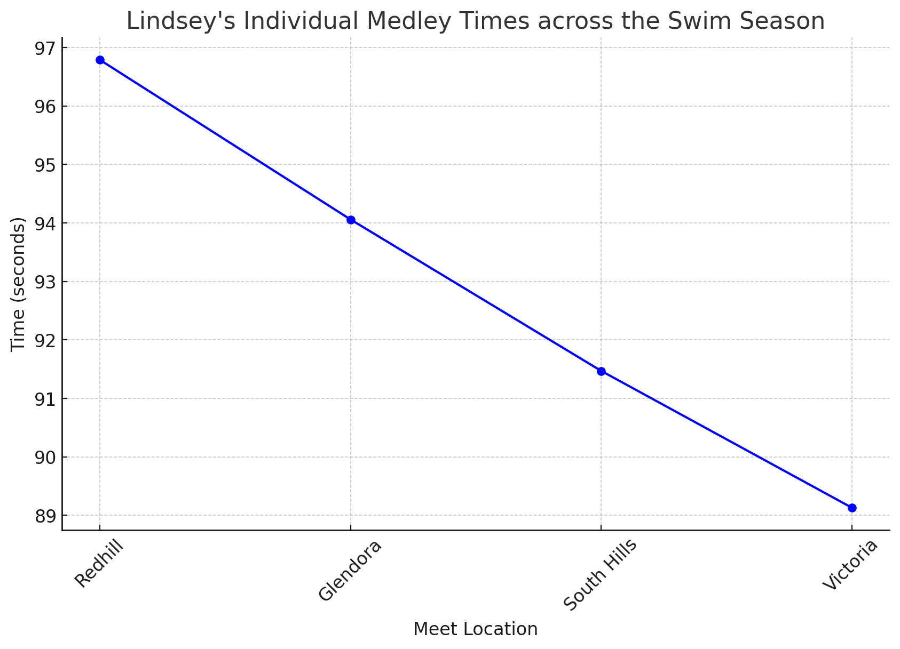

I coached swimming at Glendora Country Club CA from Spring 2018 to Summer 2019.
In addition to designing and implementing daily workouts to help athletes further gain or enhance competencies, communicating directly with parents to address participant progress and challenges, and maintaining a safe, fun, and competitive learning environment for participants, I employed Data Analysis to analyze team and individual swimming performance to enhance coaching methods.
I made excel sheets per swim meet to track swimmer times. This enabled me to analyze both holistic team and individual performance per swim event type per swim meet.

This plot is highly representative of overall swim team improvement since the 100 yard Individual Medley includes all four swim strokes in a single event.
Per meet I calculated the standard deviation and means of the team’s 100 yard Individual Medley times in order to model said times as normal distributions and track how those distributions change across the swim season.
The meets are listed in the legend from top to bottom in chronological order.
It is evident that the distribution of times moves leftward as time goes on.
This indicates the team’s holistic improvement in speed in the 100 yard Individual Medley.
In addition the spread and standard deviation is decreasing, exemplifying that individual swim ability is also becoming more standardized as the swim season went on.

I also used the 50 yard freestyle to analyze overall swim team improvement since, although it lacks the variety of strokes in the 100 yd Individual Medley, it has the quantitative advantage of being the most common event swam by my swimmers.
For this plot the z value or height can be roughly understood (roughly due to the plot being an estimated continuous probability distribution) as the probability of a given swimmer in my group having a certain age and 50 yard freestyle time.
The color represents the expected fraction of the swim season to have passed given that a swimmer has a certain age and 50 yard freestyle time and is measured on a continuous scale of red to green with red representing the beginning of the swim season and green representing the end.
The plot displays a bimodal distribution which suggests there are two age groups that are most likely to swim the 50 yard freestyle in a certain time range.
The first peak, which is higher and sharper, represents the older age group, while the second, lower and broader peak represents the younger age group.
Taken in conjunction with the shift in color, indicating the amount of time passed in the swim season, the plot demonstrates that swimmers around age 13 to 14.5 years show a high probability of achieving times in the mid to high 20 seconds range as the season progresses. Younger swimmers, around 11 to 12.5, have a broader range of times but also improve as the season goes on.

In addition to my more holistic analysis I plotted individual swimmer times per event per meet throughout the season in order to track improvement and see trends in order to recognize if there were specific strokes or events that I should modify my practices to focus on.
For this example I have displayed Lindsey’s IM times throughout the season.
As you can see her times decreased throughout the season indicating improvement across all four swimming strokes.